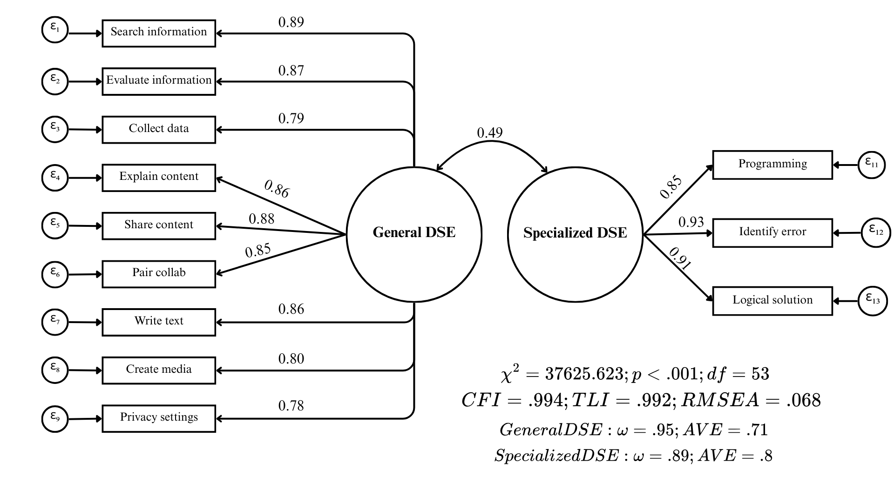

| Competence.area | Competence | Common.label | Type.of.DSE | ICILS.Label | PISA.Label |
|---|---|---|---|---|---|
| 1. Information and data literacy | 1.1 Navigate, search and filter data, information | search_info | General | Search for relevant information for a school project on the internet | Search for and find relevant information online |
| 1. Information and data literacy | 1.1 Navigate, search and filter data, information | source_info | General | Find the original sources of information referred to in an article on the internet | |
| 1. Information and data literacy | 1.2 Evaluate data, information and digital content | evaluate_info | General | Judge whether you can trust information you find on the internet | Assess the quality of information you found online |
| 1. Information and data literacy | 1.3 Manage data, information and digital content | collect_data | General | Collect and record data (e.g., using data loggers, Google Forms, spreadsheets) | |
| 1. Information and data literacy | 1.3 Manage data, information and digital content | install_app | General | Install a program or app | |
| 2. Communication and collaboration | 2.1 Interact through digital technologies/2.2 Share info | explain_content | General | Explain to other students how to share digital content online or on a school platform | |
| 2. Communication and collaboration | 2.1 Interact through digital technologies/2.2 Share info | share_content | General | Upload text, images, or video to an online profile | Share practical information with a group of students |
| 2. Communication and collaboration | 2.4 Collaborate through digital technologies | pair_collab | General | Collaborate with other students on a group assignment | |
| 3. Digital content creation | 3.1 Develop digital content | write_text | General | Write or edit text for a school assignment | Write or edit text for a school assignment |
| 3. Digital content creation | 3.1 Develop digital content / 3.2 Integrate content | create_media | General | Create a multi-media presentation (with sound, pictures, or video) | Create a multi-media presentation (with sound, pictures, or video) |
| 3. Digital content creation | 3.1 Develop digital content / 3.2 Integrate content | insert_image | General | Insert an image into a document or message | |
| 3. Digital content creation | 3.2 Integrate and re-elaborate digital content | edit_image | General | Edit digital photographs or other graphic images | |
| 3. Digital content creation | 3.1 Develop digital content | develop_webpage | Specialized | Build or edit a webpage | Create, update and maintain a webpage or a blog |
| 3. Digital content creation | 3.4 Programming | programming | Specialized | Use a text-based programming language (e.g., Python, JavaScript...) | Create a computer program (e.g., in Scratch, Python, Java) |
| 3. Digital content creation | 3.4 Programming | visual_coding | Specialized | Use visual coding (e.g., Scratch, Lego Mindstorms) to develop a simple computer program | |
| 4. Safety | 4.1 Protect devices/ 4.2 Protect personal data and privacy | change_settings | General | Change the settings on a device to suit your needs and preferences | Change the settings of a device or App in order to protect my data and privacy |
| 5. Problem solving | 5.1 Solve technical problems | identify_error | Specialized | Identify the source of an error in a software after considering a list of potential causes | |
| 5. Problem solving | 5.2 Identify needs and technological responses | identify_app | Specialized | Select the most efficient programme or App that allows me to carry out a specific task | |
| 5. Problem solving | 5.3 Use digital technologies creatively | logical_solution | Specialized | Break down a problem and represent a solution as a series of logical steps, such as an algorithm |
Measuring Digital Self-Efficacy in International Large-Scale Assessments: A Comparison Between ICILS and PISA
Daniel Miranda1, Juan Carlos Castillo2, Nicolás Tobar3, Tomás Urzúa4 and Ismael Aguayo5
Abstract
…
1 Introduction
Adopting a correct use of digital technologies is a key element for a functional life in this era in which technologies determine a large part of our lives. The literature agrees that the mastery of digital technologies requires more than physical access to devices or procedural knowledge of software; it increasingly involves attitudinal dispositions such as confidence, persistence, and the capacity to adapt in complex environments (Dijk, 2020; European Commission Joint Research Centre, 2022; Lythreatis et al., 2022). Digital self-efficacy (DSE), defined as the belief in one’s ability to accomplish tasks and overcome obstacles in digital contexts, has emerged as a central construct in understanding the development of digital competences (Bandura, 1995; Ulfert-Blank & Schmidt, 2022). Unlike purely skill-based measures, DSE captures both perceived capability and self-regulatory attitudes, making it particularly useful for explaining why some learners successfully navigate digital transformations while others struggle (Rohatgi et al., 2016; Scherer & Siddiq, 2019).
The attitudinal differences with technologies are shaped by broader sociocultural and educational contexts. Cross-national studies show that the magnitude of the gap in digital self-efficacy varies considerably depending on how societies adopt and integrate technologies into everyday life (Campos & Scherer, 2023; Hatlevik et al., 2018). This contextual variability underscores the importance of measurement models that are not only valid within single cultural settings but also comparable across diverse populations. Without rigorous tests of measurement invariance, it is difficult to determine whether observed differences reflect substantive disparities or methodological artifacts (Leitgöb et al., 2023).
International large-scale assessments (ILSAs) provide an unparalleled opportunity to examine these issues. Studies such as the International Computer and Information Literacy Study (ICILS) and the Programme for International Student Assessment (PISA) include DSE measures, but they differ in important ways. PISA has traditionally adopted a unidimensional approach, aggregating digital self-confidence into a single scale (OECD, 2023), whereas ICILS uses a bidimensional framework, distinguishing between general and specialized DSE (Fraillon, 2025). In a world of high technological complexity these differences are more than technical: as same constructs tend to not be comparable on different international studies, a lot of information that is relevant for understanding the social determinants of technologies is loosed, affecting how countries governments interpret digital readiness and how cross-cultural disparities are identified in academia.
One of the most evident concerns in most of the educational systems of these studies are the gender-related patterns of DSE. Historically, women have reported lower levels of self-confidence and motivation in digital environments, especially in tasks associated with STEM or advanced technical applications (Cai et al., 2017; Hargittai & Shafer, 2006). However, more recent studies suggest a nuanced picture: while women continue to show lower self-efficacy in specialized digital domains such as programming or data analysis, they now frequently outperform or equal men in general DSE tasks related to information navigation, communication, and content creation (Gebhardt et al., 2019). Although these findings are consistent across different countries, the magnitude of the gender gap in both dimensions can vary significantly between them (Campos & Scherer, 2023). These shifts indicate that the relationship between gender and DSE is dynamic, contingent upon the cultural context of the study and how digital tasks are conceptualized and measured.
In the present study the aim is to propose a two-dimensional scale of Digital self-efficacy that can be assimilated between PISA and ICILS, to make the comparison between the data from these two major studies fruitful. In specific, the article contributes by (i) testing whether a two-dimensional model of DSE —general and specialized— can be identified in both PISA and ICILS, (ii) evaluating its measurement invariance across gender and countries, and (iii) exploring gender DSE differences at country level for both studies. To develop the argument, the following section presents the fundamental bases of the concept of DSE and the two-dimensional approach that has been adopted in current literature. The third section discusses the divergent measurements between ICILS and PISA, pointing out the need to adapt the PISA scale to ICILS’ measurement strategies of DSE. The fourth section reviews the arguments to support the comparability of these constructs at the gender and country levels, before finally moving on to the methods, results, and final conclusions.
2 Self-efficacy and Digital Technologies
Self-efficacy it’s a concept originally formulated by Bandura (1982), which refers to “judgments of how well one can execute courses of action required to deal with prospective situations.” (p. 122). Self-efficacy occupies a foundational place in human agency, because helps to understanding how individuals approach challenges, persist in the face of setbacks, and ultimately develop competence in complex domains by creating fulfilling standards and obtaining performance accomplishments across learning activities (Bandura, 1995; Bandura, 1997; Steele & Aronson, 1995).
Self-efficacy has proven to be particularly relevant when it comes to digital technologies learning achievements. A whole thematic research agenda has opened up around self-efficacy role on the adoption of new technologies and the develop of competences on digital environments, although there are scattered efforts when it comes to measuring this construct. Early efforts aims on measuring self-efficacy in general computer domains and specific software application tasks (Compeau & Higgins, 1995; Durndell & Haag, 2002; Weigel & Hazen, 2014), while other studies focuses more on the online browsing and communication (Eastin & LaRose, 2000; Hsu & Chiu, 2004). In view of the evident hybridization between computational components and the use of the network for social interaction, the discussion on self-efficacy have centered on the ICT framework, which consider a group of generalized tasks as digital information processing, communication and content creation (Aesaert & van Braak, 2014; Hatlevik et al., 2018) but also more computational skills, such as programming or web development (Rohatgi et al., 2016).
During the second decade of the 21st century, a broad consensus emerged around the idea that ICT self-efficacy was better understood as a bidimensional construct, distinguishing between general and specialized digital tasks. Studies adopting this framework consistently identified contrasting associations with key variables related to competence development: while self-efficacy in areas such as information management, communication, and content creation tended to align positively with broader digital proficiency, self-efficacy in more advanced domains—such as web development and programming—often showed different or even inverse patterns of relationship (Gebhardt et al., 2019; Punter et al., 2017).
Ulfert-Blank & Schmidt (2022) pushed the boundaries of the traditional ICT self-efficacy framework by highlighting its limited capacity to keep pace with the rapidly evolving nature of digital systems. Due to the accelerated rate of technological change, many ICT self-efficacy items quickly became obsolete as the applications, functions, or devices they referenced fell out of use. In response to this problem, Ulfert-Blank & Schmidt (2022) proposed the development of updated constructs under the label of digital self-efficacy (DSE), grounded in the most recent guidelines for Digital Competence development, particularly those outlined in the DigComp 2.1 framework (European Commission Joint Research Centre, 2022). DigComp emphasizes that constructs related to digital engagement must encompass a wide range of functions and tasks across entire digital systems in order to remain coherent over time and across diverse technological ecologies.
The problem is that recent definitions of Digital Competence are no longer framed within a bidimensional approach to self-efficacy with technologies. New critical competences beyond the informational, communicative, and creative dimensions have begun to be incorporated, specifically safety (i.e., the ability to protect personal data, privacy, and digital well-being while navigating online environments) and problem-solving (i.e., the capacity to diagnose and resolve technical issues, adapt to unfamiliar digital tools, and strategically select appropriate technological solutions). With the introduction of these new types of activity, the DigComp framework tends to favor a multidimensional perspective that organises digital tasks by competence areas rather than by the level of difficulty or knowledge associated with each task (Ulfert-Blank & Schmidt, 2022).
Considering the disagreement that exists regarding the dimensionality of digital self-efficacy, it is necessary to study how this conceptual discussion correlates has been adressed by large-scale measurements, as well as the different understandings of self-efficacy that each of them has. To decipher this, it is worth revisiting the theoretical foundations of the construct.
3 Dimensions of the Digital Self-efficacy
In the literature, there is broad agreement on the minimal definitions of self-efficacy proposed initially by Bandura (1982); however, two approaches emerge that emphasize specific elements of the construct. The first perspective focus on task self-efficacy, understood as the perceived capabilities required to achieve a certain level of performance when mastering an activity. The second is oriented toward regulatory self-efficacy, which is more concerned with how confidence supports resilience in the face of potential barriers around the social context of individuals. While capability-focused studies emphasize the degree of difficulty of the task and the linear progression toward mastery, more attitudinal approaches highlight persistence and resistance when confronting the adversities present in the environment where the activity takes place (Marlatt et al., 1995; Schwarzer & Renner, 2000; Williams & Rhodes, 2016).
Studies examining self-efficacy with technologies tend to focus more on students’ ability to perform increasingly advanced technological tasks than on their capacity to recover from situations that may undermine their confidence. The underlying assumption in this line of research is that competence develops through progressively more complex levels of technological knowledge—from simple skills such as opening a file to more demanding tasks such as programming or web development. However, these measurement batteries typically assess, in the abstract, whether students believe they can perform a task, without situating the technology within a specific social context in which the skill must actually be applied. Consequently, self-efficacy instruments in the technological domain often structure their dimensionality around the degree of task complexity, rather than around competence areas or types of use to which the tasks belong (Bandura, 1995; Fabia, 2024; Mekheimer, 2025).
Although some studies define DSE as a simple unidimensional construct, measuring individuals’ task achievement in using digital technologies without distinguishing levels of complexity (Hatlevik et al., 2015; Rohatgi et al., 2016), a large range of studies adopt a bidimensional approach. Within this frame, a first level of achievement is categorise as general or basic DSE, which considers widespread skills around handling information, communicating or collaborating through technologies and creating digital content. A second level of achievement, jerarquically above the previous one, adresses high technical expertise on computational tasks such as using programming languages, application development, or website management, generally labelled as specialized or advanced DSE (Gebhardt et al., 2019; Pasha, 2024).
Both the unidimensional and the bidimensional approaches not only influence measurement instruments but also lead to different research findings: unidimensional models could underestimate the predictive power of DSE for complex digital enviroments, while bidimensional models offer greater explanatory precision but can introduce challenges such as construct overlap or reduced generalizability across contexts, limiting findings across educational systems and cultural contexts (Aesaert et al., 2017; Campos & Scherer, 2023; Scherer et al., 2023; Siddiq & Scherer, 2019). Thus, the choice between unidimensional and bidimensional models of DSE is not merely theoretical, as it has significant implications for the validity, reliability, and utility of research on digital competence development, especially in the case of large-scale studies, which require consistent data at a cross-cultural level.
4 PISA and ICILS approaches
International Large-scale Assessment have become one of the most important types of studies in the field of education, characterized by the deployment of their surveys throughout the educational systems of the world, enabling cross-country analysis with large volumes of data.
There are two main studies that include digital topics in their surveys. First, International Computer and Information Literacy Study (ICILS), belonging to the International Evaluation Assosiation (IEA), and second, the Programme for International Student Assessment (PISA), which is developed by the OECD. The main objective of ICILS is to measure the Computer and Information Literacy (CIL) of students through a standardized test, and predict the behavior of the score by variables of social background obtained from different questionnaires. PISA is recognized by measuring the knowledge in reading, mathematics and science of 15-year-old adolescents, evaluating how prepared they are to use this topics on the real life. This study stands out for the great thematic versatility of its questionnaires, including digital themes in the ICT familiarity module.
As can be viewed on Table 1, these studies understands and measures DSE differently. ICILS proposes a two-dimensional perspective of DSE, distinguishing between general and specialized DSE. The general dimension encompasses tasks that do not require in-depth knowledge of how digital devices work like search and find information on internet. Specialized DSE tasks requires greater mastery of digital skills, as they are more complex to perform, like create a computer program. In contrast, PISA has a one-dimensional approach that can be inferred from its framework (OECD, 2023), but the items it considered also goes from simple skills, as text editing in digital services, to more complex ones like identifying the source of an error in a software.
The different considerations of DSE number of dimensions can be adressed on the distinct approaches both studies have towards self-efficacy concept. ICILS items reflect greater relevance in the completion of a specific task rather than in carrying out an evaluative process of how to solve a situated problem. PISA presents greater definitions on the existence of a scenario where the tasks are involved, and a procedural for overcoming them. In this sense, ICILS places greater emphasis on task self-efficacy than PISA, and therefore, PISA do not attempt to differentiate tasks based on their level of technical difficulty, but on the the greatest diversity of elements that contextualize the type of task.
A careful analysis of both batteries reveals that there are differences not only in the number of dimensions, but also in the type of skills being considered (see Table 1). ICILS contains tasks related to information, communication, and digital creation. Among the last one, there are three that are specialized: web development, use of programming languages, and visual coding. PISA, on the other hand, presents two items of advanced digital creation (programming and web development), but also adds a series of other items that refer to the fourth and fifth dimensions of the Digcomp framework, namely safety and problem solving (European Commission Joint Research Centre, 2022). The inclusion of these two areas in PISA shows that the dimensionality of the construct was designed focusing more on the type of context of the tasks than on their level of difficulty, as is the case in ICILS.
The more comprehensive scope of the concept of DSE in PISA does not translate into the creation of sub-constructs as in ICILS, but rather the study chooses to reduce its dimensions to just one. Furthermore, it disregards the factor validation rule, as it has a dimension (safety) that has only one item (DeVellis & Thorpe, 2022; Kline, 2016). And with its DigComp framework approach, tasks such as web development or programming are placed in the same dimension as simple tasks such as writing text or inserting images, even though the literature in the field reports that these tasks are asymmetrically, and even oppositely, related to other variables (Aesaert et al., 2017; Fraillon et al., 2020).
Given the weaknesses of both studies, it is worth asking whether it is possible to establish some degree of comparability between them, so that the results become more robust thanks to the consistency that can be found between two such large-scale samples. ICILS has published reports that reveal the process of construction of its scales (Fraillon et al., 2025), whereas PISA’s construct remains opaque in terms of its metrics (OECD, 2023). Furthermore, we propose that the logic of ICILS can be extrapolated to the information contained in the PISA battery, but not vice versa. Although by forcing ICILS framework in PISA, it would also be possible to understand the performance of new tasks that ICILS’ bi-dimensionality approach don’t contemplate, such as pair collaboration, identifying errors or representing logical solutions.
5 Country level and Gender
When comparing psychological or educational constructs across social groups or countries, the issue of measurement invariance becomes an indispensable methodological requirement. As recent scholarship shows, social science research often assumes—incorrectly—that instruments capture the same underlying meaning across culturally or structurally diverse populations, even though socialization trajectories, interpretive repertoires, and institutional conditions can substantially alter how individuals understand and respond to items (Davidov et al., 2014; Leitgöb et al., 2023).
The contrast between the dimensionality of DSE on both studies is not a matter of chance when it comes to evaluating the sociocultural context in which they are embedded. Available evidence suggests that the magnitude and direction of DSE vary significantly between countries, indicating that self-efficacy is not expressed uniformly but is mediated by social expectations (Gebauer et al., 2021), and differential degrees of exposure to technologies (Hatlevik et al., 2018; Senkbeil, 2022). Education systems may associate divergent meanings with seemingly similar tasks with technologies, whether due to contrasting curricular trajectories (Annemann et al., 2025; Martín-Párraga et al., 2023), heterogeneity in access to digital infrastructure or differences in the social valuation of certain technological skills (Annemann et al., 2025; Conte et al., 2025).
Differences between-countries on DSE cannot be assumed without first examining the metric equivalence of the construct by study. ICILS has published reports that validate the two-dimensionality of its construct across countries in previous versions (Fraillon et al., 2020), and relevant studies has accepted the international validity of its proposal (Campos & Scherer, 2024; Gebhardt et al., 2019; Karpiński et al., 2023; Rohatgi et al., 2016). Since the tasks outlined in PISA battery are quite similar, it is likely that a two-dimensional approach would also be appropriate in its study.
The dimensions of the DSE are not only relevant to contrast for theoretical reasons, but also because consideration of this approach has an impact on the distribution among groups. A series of studies using the two-dimensional ICILS model has shown that girls outperform boys in general DSE, but present lower scores on specialized DSE (Cai et al., 2017; Campos & Scherer, 2024; Cussó-Calabuig et al., 2018; Kaarakainen et al., 2017). In turn, the literature consistently reports that students with low expectations of specialized self-efficacy sometimes score higher on standardized tests of digital skills (Aesaert et al., 2017; Weigold & Weigold, 2021).
In this study we have two main objectives. First, test the two-dimensional approach used by ICILS in the PISA battery in order to demonstrate that unidimensional digital self-efficacy can be consistently understood in a bidimensional frame. Second, evaluate the reliability and stability of constructs across genders and countries by analyzing invariance between groups, aiming to verify the external validation of the proposed digital self-efficacy batteries. Considering the previous statements, the hypotheses are the following:
\(H_{1}\): It is possible to identify two latent dimensions of digital self-efficacy (general and specialized) on PISA and ICILS.
\(H_{2}\): The bi-dimensional measurement model of digital self-efficacy is equivalent across countries in ICILS and PISA.
\(H_{3}\): The bi-dimensional measurement model of digital self-efficacy is equivalent between girls and boys.
\(H_{4}\): General and Specialized DSE exhibit distinct patterns of association with gender and national context.
6 Methods
6.1 Data
ICILS 2023 employed a two-stage cluster sampling approach across 34 countries and more than 130,000 studentes around the world. In the first stage, schools with students in the target grade were randomly selected using a probability proportional to size (PPS) method. In the second stage, one intact class was randomly selected within each sampled school, and all students in that class were invited to participate (Fraillon, 2024).
PISA 2022 target population consists of 15-year-old students attending educational establishments, employing a two-stage stratified sampling design. In the first stage, schools were systematically selected with PPS from national sampling frames. In the second stage, a target number of students (typically 42) were randomly selected with equal probability from within each sampled school (OECD, 2024). Official subset of data reach around 393,000 students, nested on 52 countries (maily OECD).
To ensure comparability, both datasets were filtered to include only those countries which participated in PISA ICT questionnaire and the ICILS survey. Furthermore, to maximize the overlap between the samples, specific adjustments were made. In ICILS data, Germany is reported as two separate regions reflecting its distinct educational systems; for this analysis, these regions were aggregated to form a single national entity. Similarly, the ICILS data for Belgium were collected exclusively from the Flemish Community (Flanders) in this wave. To align the datasets, the data from Flanders were treated as representative of the entire country.
The final country-level sample include 22 countries, with 91,132 nested students in ICILS and 183,902 in PISA.
6.2 Variables
Both studies include a module on digital self-efficacy in their questionnaires. In ICILS the 13 items are introduced with the phrase “How well can you do:” and recoded categories are 1 = I do not think I could do this; 2 = I have never done this, but I could work out how to do it; 3 = Moderately well; 4 = Very well. PISA prefaces its 14-item module with the question “To what extent are you able to do the following tasks when using <digital resources>?”, where <digital resources> is a placeholder for a term adapted to the target culture. PISA recoded categories are 1 = I cannot do this; 2 = I struggle to do this on my own; 3 = I can do this with a bit of effort; 4 = I can easily do this. Responses as “I don’t know” was threated as missing values. A complete comparison of the items from both surveys was presented in Table 1, highlighting the concordances and distinctions between the studies, and the type of DSE we are assuming to match the item.
We also consider the three-digit ISO country code and the student’s sex (recoded as 1 = male and 2 = female) from both datasets.
6.3 Analytical Strategy
All data management and analyses were conducted using the R statistical environment. The data wrangling were developed using R packages dplyr and haven.
The main analyses were performed within a Confirmatory Factor Analysis (CFA) framework to test the hypothesized two-factor structure of DSE (Brown, 2015). The CFA models were estimated with the lavaan package (Rosseel, 2012). Given the ordinal nature of the Likert-scale items, they were treated as ordered categorical variables. Therefore, models were estimated using the Weighted Least Squares Mean and Variance Adjusted (WLSMV) estimator. Missing data were handled using pairwise deletion, which is the standard approach for this estimator in lavaan besides the (default) listwise deletion. In both studies, the complex structure of the samples was addressed using sample weights (Final Student Weights). This weighting was applied to all models and descriptive analyses to ensure representative parameter estimates.
To evaluate the goodness-of-fit of the models, chi-square (χ²) test was used. However, due to the test’s sensitivity to large sample sizes, model evaluation primarily relied on a complementary set of fit indices: the Comparative Fit Index (CFI), the Tucker-Lewis Index (TLI), and the Root Mean Square Error of Approximation (RMSEA). Following common guidelines, CFI and TLI values of .95 or higher are considered indicative of excellent fit, while values between 0.90 and 0.95 are considered acceptable. For RMSEA, values of .06 or less indicate a close fit, while values up to .08 are considered adequate (Brown, 2015; Wang & Wang, 2012). To verify the reliability of the models, McDonald’s \(\omega\) will be reported. Values above .7 indicate good reliability (Hair, 2009). In terms of convergent validity, statistically significant factor loadings of at least .5 will be required. In addition, an Average Variance Extracted (AVE) of at least .5 will be required, which means that the model explains 50% of the variance of the items on average (Cheung et al., 2024). The R semTools package was used to perform reliability and convergent validity analyses (Jorgensen et al., 2025).
The analysis process involved a series of consecutive steps. The first was to estimate a pooled model to evaluate the fit of the hypothetical model in each study. In instances where the initial model failed to achieve an acceptable fit, a principled procedure of model re-specification was undertaken. Sources of model misfit were diagnosed by examining multiple indicators, including residual correlation matrices and modification indices. Items identified as primary sources of misspecification were considered for removal. However, any modification was contingent upon a strong theoretical justification beyond statistical improvement. We critically evaluated items for potential issues related to ambiguous phrasing, conceptual overlap, or compromised content validity due to the evolving technological context. This process was performed judiciously to arrive at a final, well-fitting model that remained theoretically coherent. A factor was required to have a minimum of three indicators to be retained.
In the next step, to test the comparability of this measurement model across countries and genders, a series of Multi-Group Confirmatory Factor Analyses (MGCFA) was conducted to assess Measurement Equivalence or Invariance (ME/I) (e.g., Beaujean, 2014; Davidov et al., 2014). This procedure involves testing three sequential levels of invariance by imposing progressive restrictions: 1) configural invariance, which tests if the same factor structure holds for all groups; 2) metric invariance, which adds the constraint that factor loadings are equal across groups; and 3) scalar invariance, which further constrains item intercepts (or thresholds for ordinal items) to be equal (Cheung & Rensvold, 2002; Milfont & Fischer, 2010). The establishment of invariance between these nested models was evaluated by examining the change in CFI (ΔCFI) and RMSEA (ΔRMSEA). Specifically, for metric (weak) invariance, a change in CFI of ≥ -.004 and a change in RMSEA of ≤ .05 were considered acceptable. For scalar (strong) invariance, a ΔCFI of ≥ -.004 and a ΔRMSEA of ≤ .01 were considered adequate (Rutkowski & Svetina, 2017). Achieving metric invariance is a prerequisite for further analysis of association among dimensions of DSE with factors. Achieving scalar invariance is a prerequisite for further analysis of association among dimensions of DSE with factors and estimation of the latent means across countries and across gender.
Upon establishing scalar invariance, latent mean scores of General and Specialized DSE country distribution are explored. In the next step the magnitude of the DSE gender gap is visualized for each country.
7 Results
The results are organized into three sequential sections. The first section reports the assessment of the global measurement model and the subsequent invariance testing for the ICILS dataset. The second section presents the equivalent analysis for the PISA dataset, including model specification, fit, and invariance results. Finally, the third section provides the descriptive findings for both studies, focusing on the distribution of scores and gender disparities across the participating education systems.
7.1 Study 1: ICILS
7.1.1 Global Measurement Model Assessment

The hypothesized two-factor model for ICILS demonstrated an excellent fit to the data (\(\chi^2 = 5145.041\); \(df=64\); \(p < .001\); \(CFI = .970\); \(TLI = .963\); \(RMSEA = .031\)). While the \(\chi^2\) statistic was significant, this is an expected outcome given the large sample size and the test’s known sensitivity to minor deviations from normality. Standardized factor loadings were all statistically significant and ranged from moderate to high across both factors (.60 to .84), accounting for between 36% and 71% of the item variance (\(R^2\)). The inter-factor correlation was .55. This result supports the presence of distinct General and Specialized dimensions for digital self-efficacy within the ICILS global model, consistent with the study’s IRT validations and the specialized literature. Furthermore, reliability and convergent validity indices for both factors exceeded the established thresholds (General DSE: \(\omega = .91\), \(AVE = .53\); Specialized DSE: \(\omega = .80\), \(AVE = .61\)).
7.1.2 Measurement Invariance Testing
Type | Model | χ² | df | CFI | TLI | RMSEA | Δχ² | Δdf | ΔCFI | ΔRMSEA | p | Decision |
|---|---|---|---|---|---|---|---|---|---|---|---|---|
Country | 1. Configural | 48,354 | 1,408 | 0.973 | 0.967 | 0.093 | ||||||
2. Metric | 53,181 | 1,639 | 0.970 | 0.969 | 0.090 | 4,826 | 231 | < -0.004 | < 0.05 | < 0.01 | Yes | |
3. Scalar | 66,505 | 2,143 | 0.963 | 0.970 | 0.088 | 13,324 | 504 | -0.007 | < 0.01 | < 0.01 | No | |
Gender | 1. Configural | 5,036 | 128 | 0.972 | 0.966 | 0.030 | ||||||
2. Metric | 5,248 | 139 | 0.971 | 0.967 | 0.029 | 211 | 11 | < -0.004 | < 0.05 | < 0.01 | Yes | |
3. Scalar | 5,432 | 163 | 0.970 | 0.971 | 0.028 | 185 | 24 | < -0.004 | < 0.01 | < 0.01 | Yes |
As presented in Table 2, the ICILS measurement model achieved configural and metric invariance across participating countries. However, scalar invariance could not be established, as the decrease in \(CFI\) (\(\Delta CFI = -.007\)) exceeded the strict cutoff criterion. While establishing metric invariance confirms that the factor loadings are comparable across educational systems, the lack of scalar invariance indicates non-equivalence in item intercepts, suggesting that students from different cultural backgrounds may interpret the items differently. Consequently, comparative analyses of latent means across countries were not conducted for the ICILS dataset. It is also worth noting that the multi-group country model exhibited a notably poorer overall fit compared to the pooled model, with an RMSEA of .093. In contrast, the assessment of gender invariance yielded positive results; the model satisfied all three levels of invariance (configural, metric, and scalar), with changes in fit indices remaining well within acceptable ranges. Detailed information regarding factor loadings for the General and Specialized DSE dimensions, along with the \(\chi^2\) contribution by country derived from the scalar invariance model, is provided in the Appendix (Table 4) to examine potential sources of misfit across countries.
7.2 Study 2: PISA
7.2.1 Model Respecification and Global Fit

The initial PISA model exhibited substantial misfit (\(RMSEA = .12\)), primarily driven by two items that displayed strong cross-loadings and multiple significant residual covariances. The first item, “Select the most efficient programme or App that allows me to carry out a specific task,” showed a substantial modification index for the General factor (\(MI = 76,502.42\)) and problematic negative residual correlations with items from the Specialized dimension (e.g., “logical solution”, \(r = -.28\); “programming”, \(r = -.27\)). Additionally, it showed a positive residual correlation with “Change settings” (\(r = .22\)), an indicator of the General DSE factor. Consequently, this item was removed; contrary to the theoretical model, the data suggest this task is perceived by students as a general competency rather than one related to the technical problem-solving nature of the specialized dimension.
The second problematic item was “Create, update and maintain a webpage or a blog”, which also presented a strong cross-loading on the General factor (\(MI = 39,013.99\)). It exhibited positive residual correlations with General DSE items (e.g., “create media”, \(r = .23\)) and negative correlations with Specialized DSE indicators. Beyond the technical misfit, the content validity of this item appears compromised by the evolution of web technologies. The growing democratization of web development, driven by user-friendly platforms (e.g., Wix, Fandom), may have shifted students’ perception of this task away from technical coding. Furthermore, compared to ICILS, the PISA item phrasing includes a specific reference to a “blog,” which may associate it more closely with non-technical content creation platforms. Based on these empirical and theoretical grounds, this item was also removed from the analysis.
Following this respecification, the PISA model demonstrated a satisfactory fit to the data (\(\chi^2 = 37,625.623\); \(df=53\); \(p < .001\); \(CFI = .994\); \(TLI = .992\); \(RMSEA = .068\)). Factor loadings were high and statistically significant, ranging from .78 to .93, thus explaining between 60% and 86% of the item variance (\(R^2\)). Additionally, both factors demonstrated strong reliability and convergent validity, exceeding all established thresholds (General DSE: \(\omega = .95\), \(AVE = .71\); Specialized DSE: \(\omega = .89\), \(AVE = .80\)). The inter-factor correlation was moderate at .49, further supporting the distinctness of the dimensions.
7.2.2 Measurement Invariance Testing
Type | Model | χ² | df | CFI | TLI | RMSEA | Δχ² | Δdf | ΔCFI | ΔRMSEA | p | Decision |
|---|---|---|---|---|---|---|---|---|---|---|---|---|
Country | 1. Configural | 48,796 | 1,166 | 0.994 | 0.992 | 0.077 | ||||||
2. Metric | 53,756 | 1,376 | 0.993 | 0.993 | 0.074 | 4,960 | 210 | < -0.004 | < 0.05 | < 0.01 | Yes | |
3. Scalar | 55,077 | 1,838 | 0.993 | 0.995 | 0.065 | 1,322 | 462 | < -0.004 | < 0.01 | < 0.01 | Yes | |
Gender | 1. Configural | 37,986 | 106 | 0.994 | 0.992 | 0.069 | ||||||
2. Metric | 39,415 | 116 | 0.994 | 0.993 | 0.067 | 1,429 | 10 | < -0.004 | < 0.05 | < 0.01 | Yes | |
3. Scalar | 39,078 | 138 | 0.994 | 0.994 | 0.061 | -337 | 22 | < -0.004 | < 0.01 | 1.00 | Yes |
As detailed in Table 3, the PISA measurement model successfully established invariance across all three tested levels (configural, metric, and scalar) for both country and gender groupings. The changes in the key fit indices (\(\Delta CFI\) and \(\Delta RMSEA\)) between the nested models remained strictly within the recommended thresholds. These results confirm the cross-cultural and cross-gender comparability of the DSE construct within the PISA dataset, thereby satisfying the necessary psychometric prerequisites for comparative analyses. Consistent with the reporting for ICILS, a detailed table presenting the factor loadings and country-specific \(\chi^2\) contributions derived from the scalar invariance model is provided in the Appendix (Table 5).
7.2.3 Country and Gender Differences in DSE
This section presents the descriptive analyses by country and gender for the PISA dataset. To ensure that the results accurately reflect the underlying population structures, all descriptive statistics were calculated applying the final sampling weights (Senate Weights). Although the establishment of scalar invariance permits the comparison of latent means, we opted to utilize averaged indices for this exploration based on two primary justifications. First, a robustness analysis revealed that the correlation between the averaged indices and the latent mean scores exceeded .95 across all countries (see Table 6 in the Appendix), indicating that the choice of metric does not alter the relative ranking of the units of analysis. Second, employing averaged indices preserves the original response scale of the items. This facilitates the substantive interpretation of the scores and, crucially, enables a direct comparison of absolute levels between the General and Specialized dimensions, a comparison that would be obscured by the arbitrary scaling typically inherent to latent variable models.

As illustrated in Figure 3, a consistent pattern emerges across all participating education systems: students systematically report higher levels of General DSE compared to Specialized DSE. The magnitude of the difference between the two domains varies, but the direction of the relationship remains constant. Regarding the country-level distribution for the Specialized dimension, the results reveal a striking counter-intuitive finding. Kazakhstan, despite being an education system often characterized by developing digital infrastructure relative to the OECD average, reports the highest aggregate specialized self-efficacy. In sharp contrast, countries with advanced digital ecosystems and traditionally strong performance on Computer and Information Literacy (CIL) assessments, such as Germany and Austria, rank at the very bottom of the distribution. This inversion suggests that reported self-efficacy in specialized tasks may not linearly correspond to the objective technological development of the country.

Consistent with prior literature (Gebhardt et al., 2019), the analysis reveals distinct gender patterns across the two dimensions of digital self-efficacy. As illustrated in Figure 4, female students generally report higher levels of self-efficacy in the General dimension; however, these differences are relatively modest in magnitude. In sharp contrast, the Specialized dimension reveals a pronounced and consistent gap favoring male students across almost all participating education systems. The only exception to this pattern is Kazakhstan, where a minimal difference favoring female students is observed. An examination of the country-specific magnitudes reveals a counter-intuitive pattern regarding the relationship between national development contexts and these disparities. Education systems traditionally associated with higher levels of gender equality and digital development, such as Germany, Denmark, and Finland, exhibit considerably larger gender gaps in specialized self-efficacy compared to countries such as Chile, Kazakhstan, or Uruguay.
8 Discussion
The debate surrounding DSE has adopted a two-dimensional approach that distinguishes the factors of the construct according to the degree of difficulty within each task involving technology. In the case of this study, it was possible to verify the feasibility of a comparable two-dimensional model of digital self-efficacy between the two most relevant international studies in the field. Although this result was not straight-forward, it is necessary to review in detail the elements that caused imbalances, as they are likely to provide clues for understanding where the change in attitudes towards technology is leading today.
The items that were eliminated reveals important trends to consider for innovating future measurements. Some tasks that do not belong to the basic set of digital competence (i.e. information, communication, and creation) did not fit into the proposed two-dimensional model, anchored to a linear distinction of the degree of difficulty of the tasks to group the factors. For example, expectations for achieving changes in device settings, specific to managing user ‘privacy,’ distort the model in one of the studies. Likewise, other tasks did not seem to have the same meaning that students had given them in previous years. While in previous versions web page development was a clearly distinctive skill of specialized technology users (Fraillon et al., 2013), the results suggest that it shares considerable variance with the latent construct of general self-efficacy now. The opposite for multimedia content creation, which has moved from general self-efficacy to a blurred area between the two dimensions.
This behavior of the items resonates with recent findings in the field of digital studies. A series of research has reported the massive rise of platforms providing simple and interactive access to the general population to develop their own web pages (Jagtap, 2024; Lively et al., 2023). At the same time, there are already reflections that point to the impact that the overproduction of sophisticated multimedia content has on young people’s editing standards, especially in the context of mass production of images and videos created using Artificial Intelligence (Alnaser, 2024; Gârdan et al., 2022).
Technological contexts change over time. New developments in digital tools have brought some tasks that were once challenging for the general public within easy reach, while others that used to be simple have become increasingly complex. Addressing this reality appropriately requires measuring DSE in line with the recommendation of Ulfert-Blank & Schmidt (2022): avoiding dependence on specific devices or narrowly defined tasks. Ignoring this principle undermines cross-cultural and cross-time comparability.
In this regard, the contrast between ICILS and PISA is revealing. ICILS continues to anchor its measurement in the successful completion of concrete, largely mechanical tasks, which makes the instrument more vulnerable to changes in the technological environment and to cross-national variability in meaning. PISA, by contrast, adopts a broader coping self-efficacy perspective: it situates digital practices within social relations and contextual scenarios rather than isolating discrete technical operations. By framing items in everyday, socially meaningful situations, PISA provides students with richer cues for understanding what is being asked, which in turn favors greater cross-cultural invariance. In other words, it is precisely the contextualization—rather than the mechanization—of digital tasks that allows PISA to better capture students’ resilience and adaptability to technological change.
Another possible explanation for the flexible behavior of the revised items has to do with an obsolescence of a two-dimensional model. Ulfert-Blank & Schmidt (2022) concludes the necessity of theoretically-grounded multi-dimensional measures of DSE, encompassing the five digital competence areas proposed by European Commission Joint Research Centre (2022). Although this may seem like an updated approach to the complex contemporary context, there is insufficient data available to carry out an international comparison of more than two dimensions of DSE. The batteries of both studies reviewed are too short and do not conceptually measure the five factors of digital competency formation. In turn, a multidimensional approach to DSE such as that proposed by Ulfert-Blank & Schmidt (2022) requires external validation that has not yet been tested on a large scale. In this regard, the contribution of this study lies in offering, based on the available data, a relatively adequate scale that avoids falling into divergent guidelines for DSE at large scale assessments research.
Finally, a counterintutive result points that less developed countries as Kazakhstan or Romania present the best specialized scores, in spite of their bad performance on general self-efficacy. At the same time, catches the attention the reduced or neutralized gender specialized self-efficacy gap of global-south countries as Chile, Korea, Kazakhstan, where policies aimed at encouraging STEM engagement on girls are supposedly less intense than the global-north countries, where the gap tend to be higher. The consistency between the two studies confirms a recent trend within gender and STEM literature: the paradox that in countries with less gender equality, attitudinal differences between men and women tend to decrease (Guo et al., 2024; Marsh et al., 2021).
9 Conclusions
Based on a comparative study between PISA and ICILS, this paper argues that digital self-efficacy can be studied from a two-dimensional perspective, even when it is not understood in this way, as in the case of PISA. This result challenges the measurement of digital self-efficacy by ILSAs, since considering all tasks within the same range of difficulty can have serious implications when studying students’ digital self-efficacy, especially when considering that the two-dimensional approach is equivalent across countries and gender.
This contribution encountered two main limitations. First, in order for the models to obtain acceptable fit indices, items had to be removed from the batteries in both studies. Therefore, invariance works, but not without first modifying the model specifications. Second, only one measurement from each study was used (PISA 2022 and ICILS 2023 respectively), which does not allow for the identification of stability in digital self-efficacy scales over time. Considering this, it is extremely important to continue this line of work and conduct research that addresses the reliability of the scales, taking into account the time factor. In addition, study organisers should seriously consider new ways of measuring digital self-efficacy in contexts that are changing at a rapid pace.
The results force to think that differences in technology engagement are not homogeneous and do not present in the later stages of education. Already, in elementary school students (14 years old), it is possible to see that girls in several countries inconsistently show less confidence with advanced technologies, although they have a slight advantage in general-purpose technologies. Through longitudinal methods, future studies should evaluate when and why these DSE inequalities awaken in the growth of boys and girls.
Finally, it remains to reflect on the contextual variables that may be determining gender DSE divides. The results provided some clues: developed countries show greater gender gaps in specialized self-efficacy compared to underdeveloped countries. This counterintuitive finding raises a number of questions for the future, such as what are the structural characteristics of countries that exhibit this dynamic, as well as delving deeper into the cultural patterns among male and female students that widen existing gaps.
10 Appendix
Country | Latent Factor | Item | Std. Loading | N | χ² |
|---|---|---|---|---|---|
Spain | gen_dse | search_info | 0.701 | 11,799 | 5,887.93 |
source_info | 0.628 | ||||
evaluate_info | 0.567 | ||||
install_app | 0.658 | ||||
share_content | 0.712 | ||||
write_text | 0.752 | ||||
create_media | 0.714 | ||||
insert_image | 0.774 | ||||
edit_image | 0.592 | ||||
change_settings | 0.646 | ||||
spec_dse | develop_webpage | 0.718 | |||
programming | 0.759 | ||||
visual_coding | 0.786 | ||||
Finland | gen_dse | search_info | 0.798 | 4,249 | 5,878.40 |
source_info | 0.715 | ||||
evaluate_info | 0.736 | ||||
install_app | 0.733 | ||||
share_content | 0.734 | ||||
write_text | 0.797 | ||||
create_media | 0.752 | ||||
insert_image | 0.783 | ||||
edit_image | 0.677 | ||||
change_settings | 0.763 | ||||
spec_dse | develop_webpage | 0.777 | |||
programming | 0.860 | ||||
visual_coding | 0.882 | ||||
Denmark | gen_dse | search_info | 0.752 | 3,038 | 5,790.66 |
source_info | 0.617 | ||||
evaluate_info | 0.653 | ||||
install_app | 0.674 | ||||
share_content | 0.704 | ||||
write_text | 0.757 | ||||
create_media | 0.625 | ||||
insert_image | 0.848 | ||||
edit_image | 0.522 | ||||
change_settings | 0.559 | ||||
spec_dse | develop_webpage | 0.735 | |||
programming | 0.830 | ||||
visual_coding | 0.872 | ||||
Korea | gen_dse | search_info | 0.841 | 3,723 | 5,348.01 |
source_info | 0.688 | ||||
evaluate_info | 0.726 | ||||
install_app | 0.779 | ||||
share_content | 0.837 | ||||
write_text | 0.889 | ||||
create_media | 0.837 | ||||
insert_image | 0.874 | ||||
edit_image | 0.786 | ||||
change_settings | 0.790 | ||||
spec_dse | develop_webpage | 0.801 | |||
programming | 0.767 | ||||
visual_coding | 0.792 | ||||
Czech Republic | gen_dse | search_info | 0.705 | 8,169 | 4,863.58 |
source_info | 0.647 | ||||
evaluate_info | 0.678 | ||||
install_app | 0.729 | ||||
share_content | 0.722 | ||||
write_text | 0.716 | ||||
create_media | 0.679 | ||||
insert_image | 0.801 | ||||
edit_image | 0.624 | ||||
change_settings | 0.678 | ||||
spec_dse | develop_webpage | 0.752 | |||
programming | 0.767 | ||||
visual_coding | 0.723 | ||||
Sweden | gen_dse | search_info | 0.823 | 3,401 | 4,723.75 |
source_info | 0.668 | ||||
evaluate_info | 0.743 | ||||
install_app | 0.707 | ||||
share_content | 0.722 | ||||
write_text | 0.820 | ||||
create_media | 0.702 | ||||
insert_image | 0.851 | ||||
edit_image | 0.635 | ||||
change_settings | 0.760 | ||||
spec_dse | develop_webpage | 0.728 | |||
programming | 0.791 | ||||
visual_coding | 0.802 | ||||
Malta | gen_dse | search_info | 0.847 | 3,115 | 4,294.00 |
source_info | 0.685 | ||||
evaluate_info | 0.734 | ||||
install_app | 0.832 | ||||
share_content | 0.850 | ||||
write_text | 0.862 | ||||
create_media | 0.784 | ||||
insert_image | 0.888 | ||||
edit_image | 0.617 | ||||
change_settings | 0.833 | ||||
spec_dse | develop_webpage | 0.820 | |||
programming | 0.806 | ||||
visual_coding | 0.836 | ||||
Slovenia | gen_dse | search_info | 0.780 | 3,318 | 3,724.35 |
source_info | 0.727 | ||||
evaluate_info | 0.728 | ||||
install_app | 0.738 | ||||
share_content | 0.776 | ||||
write_text | 0.793 | ||||
create_media | 0.743 | ||||
insert_image | 0.830 | ||||
edit_image | 0.715 | ||||
change_settings | 0.762 | ||||
spec_dse | develop_webpage | 0.768 | |||
programming | 0.852 | ||||
visual_coding | 0.870 | ||||
Germany | gen_dse | search_info | 0.668 | 7,791 | 3,717.01 |
source_info | 0.655 | ||||
evaluate_info | 0.590 | ||||
install_app | 0.662 | ||||
share_content | 0.618 | ||||
write_text | 0.662 | ||||
create_media | 0.631 | ||||
insert_image | 0.733 | ||||
edit_image | 0.596 | ||||
change_settings | 0.675 | ||||
spec_dse | develop_webpage | 0.754 | |||
programming | 0.840 | ||||
visual_coding | 0.809 | ||||
Kazakhstan | gen_dse | search_info | 0.718 | 4,852 | 3,625.18 |
source_info | 0.704 | ||||
evaluate_info | 0.686 | ||||
install_app | 0.701 | ||||
share_content | 0.764 | ||||
write_text | 0.739 | ||||
create_media | 0.713 | ||||
insert_image | 0.781 | ||||
edit_image | 0.677 | ||||
change_settings | 0.734 | ||||
spec_dse | develop_webpage | 0.734 | |||
programming | 0.774 | ||||
visual_coding | 0.714 | ||||
Austria | gen_dse | search_info | 0.646 | 3,448 | 3,337.40 |
source_info | 0.620 | ||||
evaluate_info | 0.571 | ||||
install_app | 0.643 | ||||
share_content | 0.652 | ||||
write_text | 0.663 | ||||
create_media | 0.632 | ||||
insert_image | 0.748 | ||||
edit_image | 0.574 | ||||
change_settings | 0.635 | ||||
spec_dse | develop_webpage | 0.744 | |||
programming | 0.859 | ||||
visual_coding | 0.845 | ||||
Slovak Republic | gen_dse | search_info | 0.750 | 3,034 | 3,308.43 |
source_info | 0.647 | ||||
evaluate_info | 0.681 | ||||
install_app | 0.737 | ||||
share_content | 0.715 | ||||
write_text | 0.745 | ||||
create_media | 0.669 | ||||
insert_image | 0.830 | ||||
edit_image | 0.625 | ||||
change_settings | 0.703 | ||||
spec_dse | develop_webpage | 0.759 | |||
programming | 0.780 | ||||
visual_coding | 0.777 | ||||
Hungary | gen_dse | search_info | 0.684 | 3,491 | 3,247.46 |
source_info | 0.618 | ||||
evaluate_info | 0.637 | ||||
install_app | 0.722 | ||||
share_content | 0.698 | ||||
write_text | 0.723 | ||||
create_media | 0.586 | ||||
insert_image | 0.809 | ||||
edit_image | 0.627 | ||||
change_settings | 0.676 | ||||
spec_dse | develop_webpage | 0.761 | |||
programming | 0.792 | ||||
visual_coding | 0.803 | ||||
Greece | gen_dse | search_info | 0.764 | 3,576 | 3,170.88 |
source_info | 0.628 | ||||
evaluate_info | 0.667 | ||||
install_app | 0.733 | ||||
share_content | 0.720 | ||||
write_text | 0.739 | ||||
create_media | 0.721 | ||||
insert_image | 0.716 | ||||
edit_image | 0.691 | ||||
change_settings | 0.708 | ||||
spec_dse | develop_webpage | 0.766 | |||
programming | 0.799 | ||||
visual_coding | 0.794 | ||||
Belgium | gen_dse | search_info | 0.683 | 3,365 | 2,955.53 |
source_info | 0.608 | ||||
evaluate_info | 0.632 | ||||
install_app | 0.641 | ||||
share_content | 0.696 | ||||
write_text | 0.697 | ||||
create_media | 0.653 | ||||
insert_image | 0.762 | ||||
edit_image | 0.591 | ||||
change_settings | 0.677 | ||||
spec_dse | develop_webpage | 0.672 | |||
programming | 0.757 | ||||
visual_coding | 0.728 | ||||
Latvia | gen_dse | search_info | 0.749 | 2,705 | 2,775.12 |
source_info | 0.645 | ||||
evaluate_info | 0.685 | ||||
install_app | 0.769 | ||||
share_content | 0.769 | ||||
write_text | 0.726 | ||||
create_media | 0.730 | ||||
insert_image | 0.802 | ||||
edit_image | 0.636 | ||||
change_settings | 0.743 | ||||
spec_dse | develop_webpage | 0.784 | |||
programming | 0.739 | ||||
visual_coding | 0.719 | ||||
Chile | gen_dse | search_info | 0.775 | 3,216 | 2,723.38 |
source_info | 0.725 | ||||
evaluate_info | 0.741 | ||||
install_app | 0.736 | ||||
share_content | 0.783 | ||||
write_text | 0.825 | ||||
create_media | 0.783 | ||||
insert_image | 0.840 | ||||
edit_image | 0.674 | ||||
change_settings | 0.735 | ||||
spec_dse | develop_webpage | 0.736 | |||
programming | 0.875 | ||||
visual_coding | 0.875 | ||||
Italy | gen_dse | search_info | 0.620 | 3,376 | 2,379.91 |
source_info | 0.590 | ||||
evaluate_info | 0.601 | ||||
install_app | 0.625 | ||||
share_content | 0.641 | ||||
write_text | 0.641 | ||||
create_media | 0.675 | ||||
insert_image | 0.707 | ||||
edit_image | 0.564 | ||||
change_settings | 0.653 | ||||
spec_dse | develop_webpage | 0.683 | |||
programming | 0.780 | ||||
visual_coding | 0.803 | ||||
United States | gen_dse | search_info | 0.808 | 2,352 | 2,356.95 |
source_info | 0.606 | ||||
evaluate_info | 0.744 | ||||
install_app | 0.685 | ||||
share_content | 0.834 | ||||
write_text | 0.823 | ||||
create_media | 0.725 | ||||
insert_image | 0.895 | ||||
edit_image | 0.581 | ||||
change_settings | 0.814 | ||||
spec_dse | develop_webpage | 0.712 | |||
programming | 0.832 | ||||
visual_coding | 0.797 | ||||
Romania | gen_dse | search_info | 0.802 | 3,270 | 2,328.28 |
source_info | 0.711 | ||||
evaluate_info | 0.754 | ||||
install_app | 0.785 | ||||
share_content | 0.830 | ||||
write_text | 0.804 | ||||
create_media | 0.797 | ||||
insert_image | 0.827 | ||||
edit_image | 0.675 | ||||
change_settings | 0.773 | ||||
spec_dse | develop_webpage | 0.797 | |||
programming | 0.843 | ||||
visual_coding | 0.830 | ||||
Croatia | gen_dse | search_info | 0.895 | 2,911 | 2,171.70 |
source_info | 0.744 | ||||
evaluate_info | 0.826 | ||||
install_app | 0.871 | ||||
share_content | 0.871 | ||||
write_text | 0.897 | ||||
create_media | 0.832 | ||||
insert_image | 0.929 | ||||
edit_image | 0.795 | ||||
change_settings | 0.848 | ||||
spec_dse | develop_webpage | 0.814 | |||
programming | 0.862 | ||||
visual_coding | 0.821 | ||||
Uruguay | gen_dse | search_info | 0.690 | 2,933 | 2,051.43 |
source_info | 0.608 | ||||
evaluate_info | 0.621 | ||||
install_app | 0.653 | ||||
share_content | 0.723 | ||||
write_text | 0.773 | ||||
create_media | 0.741 | ||||
insert_image | 0.767 | ||||
edit_image | 0.586 | ||||
change_settings | 0.601 | ||||
spec_dse | develop_webpage | 0.662 | |||
programming | 0.745 | ||||
visual_coding | 0.745 |
Country | Latent Factor | Item | Std. Loading | N | χ² |
|---|---|---|---|---|---|
Spain | gen_dse | search_info | 0.867 | 30,800 | 8,474.72 |
evaluate_info | 0.808 | ||||
collect_data | 0.747 | ||||
explain_content | 0.830 | ||||
share_content | 0.850 | ||||
pair_collab | 0.821 | ||||
write_text | 0.843 | ||||
create_media | 0.787 | ||||
change_settings | 0.684 | ||||
spec_dse | programming | 0.845 | |||
identify_error | 0.937 | ||||
logical_solution | 0.882 | ||||
Kazakhstan | gen_dse | search_info | 0.911 | 19,769 | 7,441.12 |
evaluate_info | 0.916 | ||||
collect_data | 0.875 | ||||
explain_content | 0.905 | ||||
share_content | 0.914 | ||||
pair_collab | 0.909 | ||||
write_text | 0.893 | ||||
create_media | 0.870 | ||||
change_settings | 0.870 | ||||
spec_dse | programming | 0.866 | |||
identify_error | 0.929 | ||||
logical_solution | 0.919 | ||||
Czech Republic | gen_dse | search_info | 0.861 | 8,460 | 6,499.81 |
evaluate_info | 0.832 | ||||
collect_data | 0.728 | ||||
explain_content | 0.795 | ||||
share_content | 0.834 | ||||
pair_collab | 0.784 | ||||
write_text | 0.823 | ||||
create_media | 0.756 | ||||
change_settings | 0.722 | ||||
spec_dse | programming | 0.865 | |||
identify_error | 0.936 | ||||
logical_solution | 0.915 | ||||
Greece | gen_dse | search_info | 0.830 | 6,403 | 4,657.64 |
evaluate_info | 0.838 | ||||
collect_data | 0.769 | ||||
explain_content | 0.837 | ||||
share_content | 0.833 | ||||
pair_collab | 0.811 | ||||
write_text | 0.835 | ||||
create_media | 0.759 | ||||
change_settings | 0.752 | ||||
spec_dse | programming | 0.838 | |||
identify_error | 0.887 | ||||
logical_solution | 0.874 | ||||
Finland | gen_dse | search_info | 0.884 | 10,239 | 4,272.38 |
evaluate_info | 0.908 | ||||
collect_data | 0.838 | ||||
explain_content | 0.891 | ||||
share_content | 0.892 | ||||
pair_collab | 0.892 | ||||
write_text | 0.905 | ||||
create_media | 0.838 | ||||
change_settings | 0.835 | ||||
spec_dse | programming | 0.837 | |||
identify_error | 0.956 | ||||
logical_solution | 0.906 | ||||
Slovenia | gen_dse | search_info | 0.866 | 6,721 | 4,228.97 |
evaluate_info | 0.851 | ||||
collect_data | 0.730 | ||||
explain_content | 0.851 | ||||
share_content | 0.867 | ||||
pair_collab | 0.829 | ||||
write_text | 0.796 | ||||
create_media | 0.748 | ||||
change_settings | 0.758 | ||||
spec_dse | programming | 0.837 | |||
identify_error | 0.936 | ||||
logical_solution | 0.914 | ||||
Sweden | gen_dse | search_info | 0.934 | 6,072 | 4,106.75 |
evaluate_info | 0.915 | ||||
collect_data | 0.816 | ||||
explain_content | 0.888 | ||||
share_content | 0.906 | ||||
pair_collab | 0.876 | ||||
write_text | 0.900 | ||||
create_media | 0.794 | ||||
change_settings | 0.780 | ||||
spec_dse | programming | 0.799 | |||
identify_error | 0.945 | ||||
logical_solution | 0.891 | ||||
Romania | gen_dse | search_info | 0.864 | 7,364 | 3,822.75 |
evaluate_info | 0.857 | ||||
collect_data | 0.795 | ||||
explain_content | 0.856 | ||||
share_content | 0.869 | ||||
pair_collab | 0.846 | ||||
write_text | 0.860 | ||||
create_media | 0.805 | ||||
change_settings | 0.777 | ||||
spec_dse | programming | 0.841 | |||
identify_error | 0.914 | ||||
logical_solution | 0.880 | ||||
Slovak Republic | gen_dse | search_info | 0.871 | 5,824 | 3,483.17 |
evaluate_info | 0.866 | ||||
collect_data | 0.786 | ||||
explain_content | 0.845 | ||||
share_content | 0.884 | ||||
pair_collab | 0.860 | ||||
write_text | 0.860 | ||||
create_media | 0.790 | ||||
change_settings | 0.771 | ||||
spec_dse | programming | 0.841 | |||
identify_error | 0.921 | ||||
logical_solution | 0.909 | ||||
Croatia | gen_dse | search_info | 0.878 | 6,135 | 3,473.38 |
evaluate_info | 0.877 | ||||
collect_data | 0.819 | ||||
explain_content | 0.880 | ||||
share_content | 0.901 | ||||
pair_collab | 0.870 | ||||
write_text | 0.878 | ||||
create_media | 0.841 | ||||
change_settings | 0.792 | ||||
spec_dse | programming | 0.866 | |||
identify_error | 0.934 | ||||
logical_solution | 0.913 | ||||
Italy | gen_dse | search_info | 0.869 | 10,552 | 3,336.08 |
evaluate_info | 0.832 | ||||
collect_data | 0.706 | ||||
explain_content | 0.809 | ||||
share_content | 0.852 | ||||
pair_collab | 0.809 | ||||
write_text | 0.820 | ||||
create_media | 0.773 | ||||
change_settings | 0.696 | ||||
spec_dse | programming | 0.840 | |||
identify_error | 0.918 | ||||
logical_solution | 0.866 | ||||
Korea | gen_dse | search_info | 0.952 | 6,454 | 3,167.79 |
evaluate_info | 0.926 | ||||
collect_data | 0.882 | ||||
explain_content | 0.909 | ||||
share_content | 0.950 | ||||
pair_collab | 0.935 | ||||
write_text | 0.905 | ||||
create_media | 0.864 | ||||
change_settings | 0.860 | ||||
spec_dse | programming | 0.906 | |||
identify_error | 0.961 | ||||
logical_solution | 0.951 | ||||
Germany | gen_dse | search_info | 0.911 | 6,116 | 3,065.99 |
evaluate_info | 0.834 | ||||
collect_data | 0.752 | ||||
explain_content | 0.833 | ||||
share_content | 0.874 | ||||
pair_collab | 0.818 | ||||
write_text | 0.812 | ||||
create_media | 0.732 | ||||
change_settings | 0.744 | ||||
spec_dse | programming | 0.840 | |||
identify_error | 0.924 | ||||
logical_solution | 0.904 | ||||
Hungary | gen_dse | search_info | 0.903 | 6,198 | 3,065.17 |
evaluate_info | 0.861 | ||||
collect_data | 0.843 | ||||
explain_content | 0.873 | ||||
share_content | 0.898 | ||||
pair_collab | 0.865 | ||||
write_text | 0.876 | ||||
create_media | 0.786 | ||||
change_settings | 0.787 | ||||
spec_dse | programming | 0.854 | |||
identify_error | 0.935 | ||||
logical_solution | 0.915 | ||||
Belgium | gen_dse | search_info | 0.875 | 8,286 | 3,058.85 |
evaluate_info | 0.843 | ||||
collect_data | 0.779 | ||||
explain_content | 0.838 | ||||
share_content | 0.854 | ||||
pair_collab | 0.819 | ||||
write_text | 0.840 | ||||
create_media | 0.775 | ||||
change_settings | 0.745 | ||||
spec_dse | programming | 0.837 | |||
identify_error | 0.924 | ||||
logical_solution | 0.917 | ||||
Chile | gen_dse | search_info | 0.891 | 6,488 | 2,861.70 |
evaluate_info | 0.876 | ||||
collect_data | 0.762 | ||||
explain_content | 0.847 | ||||
share_content | 0.868 | ||||
pair_collab | 0.853 | ||||
write_text | 0.859 | ||||
create_media | 0.807 | ||||
change_settings | 0.762 | ||||
spec_dse | programming | 0.873 | |||
identify_error | 0.934 | ||||
logical_solution | 0.919 | ||||
Denmark | gen_dse | search_info | 0.908 | 6,200 | 2,785.38 |
evaluate_info | 0.870 | ||||
collect_data | 0.732 | ||||
explain_content | 0.843 | ||||
share_content | 0.898 | ||||
pair_collab | 0.858 | ||||
write_text | 0.850 | ||||
create_media | 0.781 | ||||
change_settings | 0.688 | ||||
spec_dse | programming | 0.827 | |||
identify_error | 0.922 | ||||
logical_solution | 0.891 | ||||
Austria | gen_dse | search_info | 0.881 | 6,151 | 2,743.00 |
evaluate_info | 0.846 | ||||
collect_data | 0.729 | ||||
explain_content | 0.841 | ||||
share_content | 0.875 | ||||
pair_collab | 0.838 | ||||
write_text | 0.833 | ||||
create_media | 0.764 | ||||
change_settings | 0.758 | ||||
spec_dse | programming | 0.860 | |||
identify_error | 0.930 | ||||
logical_solution | 0.905 | ||||
Uruguay | gen_dse | search_info | 0.894 | 6,618 | 2,359.73 |
evaluate_info | 0.891 | ||||
collect_data | 0.824 | ||||
explain_content | 0.871 | ||||
share_content | 0.891 | ||||
pair_collab | 0.867 | ||||
write_text | 0.881 | ||||
create_media | 0.847 | ||||
change_settings | 0.809 | ||||
spec_dse | programming | 0.888 | |||
identify_error | 0.917 | ||||
logical_solution | 0.920 | ||||
Latvia | gen_dse | search_info | 0.870 | 5,373 | 2,220.17 |
evaluate_info | 0.840 | ||||
collect_data | 0.743 | ||||
explain_content | 0.823 | ||||
share_content | 0.862 | ||||
pair_collab | 0.821 | ||||
write_text | 0.816 | ||||
create_media | 0.760 | ||||
change_settings | 0.744 | ||||
spec_dse | programming | 0.815 | |||
identify_error | 0.916 | ||||
logical_solution | 0.884 | ||||
United States | gen_dse | search_info | 0.906 | 4,552 | 2,204.29 |
evaluate_info | 0.884 | ||||
collect_data | 0.800 | ||||
explain_content | 0.872 | ||||
share_content | 0.878 | ||||
pair_collab | 0.861 | ||||
write_text | 0.869 | ||||
create_media | 0.804 | ||||
change_settings | 0.780 | ||||
spec_dse | programming | 0.878 | |||
identify_error | 0.946 | ||||
logical_solution | 0.898 | ||||
Malta | gen_dse | search_info | 0.905 | 3,127 | 1,269.81 |
evaluate_info | 0.899 | ||||
collect_data | 0.817 | ||||
explain_content | 0.875 | ||||
share_content | 0.872 | ||||
pair_collab | 0.839 | ||||
write_text | 0.882 | ||||
create_media | 0.834 | ||||
change_settings | 0.831 | ||||
spec_dse | programming | 0.840 | |||
identify_error | 0.943 | ||||
logical_solution | 0.913 |
Country | N | General DSE Correlation | Specialized DSE Correlation |
|---|---|---|---|
Overall | 152,153 | 0.959 | 0.982 |
Austria | 5,123 | 0.965 | 0.991 |
Belgium | 6,188 | 0.957 | 0.987 |
Chile | 4,464 | 0.961 | 0.986 |
Czech Republic | 7,064 | 0.969 | 0.990 |
Germany | 4,340 | 0.959 | 0.988 |
Denmark | 4,420 | 0.951 | 0.989 |
Spain | 26,560 | 0.954 | 0.985 |
Finland | 7,733 | 0.965 | 0.978 |
Greece | 5,553 | 0.967 | 0.980 |
Croatia | 5,424 | 0.968 | 0.987 |
Hungary | 5,247 | 0.964 | 0.988 |
Italy | 9,182 | 0.964 | 0.986 |
Kazakhstan | 18,320 | 0.964 | 0.967 |
Korea | 5,986 | 0.953 | 0.991 |
Latvia | 4,714 | 0.959 | 0.983 |
Malta | 2,433 | 0.958 | 0.979 |
Romania | 6,400 | 0.966 | 0.982 |
Slovak Republic | 4,907 | 0.967 | 0.984 |
Slovenia | 5,815 | 0.971 | 0.984 |
Sweden | 4,808 | 0.963 | 0.975 |
Uruguay | 3,698 | 0.961 | 0.984 |
United States | 3,774 | 0.948 | 0.986 |
References
Aesaert, K., & van Braak, J. (2014). Exploring factors related to primary school pupils’ ICT self-efficacy: A multilevel approach. Computers in Human Behavior, 41, 327–341. https://doi.org/10.1016/j.chb.2014.10.006
Aesaert, K., Voogt, J., Kuiper, E., & van Braak, J. (2017). Accuracy and bias of ICT self-efficacy: An empirical study into students’ over- and underestimation of their ICT competences. Computers in Human Behavior, 75, 92–102. https://doi.org/10.1016/j.chb.2017.05.010
Alnaser, A. (2024). The Impact of AI-Augmented Image and Video Editing on Social Media Engagement, Perception, and Digital Culture. Journal of Computational Intelligence, Machine Reasoning, and Decision-Making, 9(10), 15–32.
Annemann, C., Menge, C., & Gerick, J. (2025). Teachers’ Participation in Digitalization-Related Professional Development: An International Comparison. Education Sciences, 15(4), 486. https://doi.org/10.3390/educsci15040486
Bandura, A. (1982). Self-efficacy mechanism in human agency. American Psychologist, 37(2), 122–147. https://doi.org/10.1037/0003-066X.37.2.122
Bandura, A. (Ed.). (1995). Self-efficacy in changing societies (pp. xv, 334). Cambridge University Press. https://doi.org/10.1017/CBO9780511527692
Bandura, A. (1997). Self-efficacy: The exercise of control (pp. ix, 604). W H Freeman/Times Books/ Henry Holt & Co.
Beaujean, A. A. (2014). Latent Variable Modeling Using R: A Step-by-Step Guide. Routledge. https://doi.org/10.4324/9781315869780
Brown, T. (2015). Confirmatory Factor Analysis for Applied Research: Second Edition. Guildford.
Cai, Z., Fan, X., & Du, J. (2017). Gender and attitudes toward technology use: A meta-analysis. Computers & Education, 105, 1–13. https://doi.org/10.1016/j.compedu.2016.11.003
Campos, D. G., & Scherer, R. (2023). Digital gender gaps in Students’ knowledge, attitudes and skills: An integrative data analysis across 32 Countries. Education and Information Technologies. https://doi.org/10.1007/s10639-023-12272-9
Campos, D. G., & Scherer, R. (2024). Digital gender gaps in Students’ knowledge, attitudes and skills: An integrative data analysis across 32 Countries. Education and Information Technologies, 29(1), 655–693. https://doi.org/10.1007/s10639-023-12272-9
Cheung, G. W., Cooper-Thomas, H. D., Lau, R. S., & Wang, L. C. (2024). Reporting reliability, convergent and discriminant validity with structural equation modeling: A review and best-practice recommendations. Asia Pacific Journal of Management, 41(2), 745–783. https://doi.org/10.1007/s10490-023-09871-y
Cheung, G. W., & Rensvold, R. B. (2002). Evaluating goodness-of-fit indexes for testing measurement invariance. Structural Equation Modeling, 9(2), 233–255. https://doi.org/10.1207/S15328007SEM0902_5
Compeau, D. R., & Higgins, C. A. (1995). Computer Self-Efficacy: Development of a Measure and Initial Test. MIS Quarterly, 19(2), 189–211. https://doi.org/10.2307/249688
Conte, G., Arrigoni, C., Magon, A., De Angeli, G., Paglione, G., Baroni, I., Belloni, S., Ghizzardi, G., Notarnicola, I., Stievano, A., & Caruso, R. (2025). Unlocking the Determinants of Digital and Technological Self-Efficacy: Insights from a Cross-Sectional Study Among Nurses and Nursing Students. Healthcare, 13(17), 2208. https://doi.org/10.3390/healthcare13172208
Cussó-Calabuig, R., Farran, X. C., & Bosch-Capblanch, X. (2018). Effects of intensive use of computers in secondary school on gender differences in attitudes towards ICT: A systematic review. Education and Information Technologies, 23(5), 2111–2139. https://doi.org/10.1007/s10639-018-9706-6
Davidov, E., Meuleman, B., Cieciuch, J., Schmidt, P., & Billiet, J. (2014). Measurement equivalence in cross-national research. Annual Review of Sociology, 40, 55–75. https://doi.org/10.1146/annurev-soc-071913-043137
DeVellis, R. F., & Thorpe, C. T. (2022). Scale development: Theory and applications (Fifth edition). SAGE.
Dijk, J. van. (2020). The digital divide. Polity.
Durndell, A., & Haag, Z. (2002). Computer self efficacy, computer anxiety, attitudes towards the Internet and reported experience with the Internet, by gender, in an East European sample. Computers in Human Behavior, 18(5), 521–535. https://doi.org/10.1016/S0747-5632(02)00006-7
Eastin, M. S., & LaRose, R. (2000). Internet Self-Efficacy and the Psychology of the Digital Divide. Journal of Computer-Mediated Communication, 6(1), JCMC611. https://doi.org/10.1111/j.1083-6101.2000.tb00110.x
European Commission Joint Research Centre. (2022). DigComp 2.2, The Digital Competence framework for citizens: With new examples of knowledge, skills and attitudes. Publications Office.
Fabia, J. N. V. (2024). Students satisfaction, self-efficacy and achievement in an emergency online learning course. Research in Learning Technology, 32. https://doi.org/10.25304/rlt.v32.3179
Fraillon, J. (Ed.). (2024). An International Perspective on Digital Literacy: Results from ICILS 2023. International Association for the Evaluation of Educational Achievement.
Fraillon, J. (Ed.). (2025). An International Perspective on Digital Literacy: Results from ICILS 2023 (1st ed. 2025). Springer Nature Switzerland. https://doi.org/10.1007/978-3-031-87722-3
Fraillon, J., Ainley, J., Schulz, W., Friedman, T., & Duckworth, D. (2020). Preparing for Life in a Digital World: IEA International Computer and Information Literacy Study 2018 International Report. Springer Nature. https://doi.org/10.1007/978-3-030-38781-5
Fraillon, J., Rožman, M., Meyer, S., Musu, L., Liaw, Y.-L., Christiansen, A., & Tieck, S. (2025). IEA ICILS 2023 Technical Report. International Association for the Evaluation of Educational Achievement.
Fraillon, J., Schulz, W., Friedman, T., Ainley, J., & Gebhardt, E. (2013). ICILS 2013: Technical report. IEA Secretariat.
Gârdan, I. P., Mauri, A., Dumitru, I., Gârdan, D. A., Maican, S. S., & Moise, D. (2022). User-Generated Multimedia Content Impact on the Destination Choice: Five Dimensions of Consumer Experience. Electronics, 11(16), 2570. https://doi.org/10.3390/electronics11162570
Gebauer, M. M., McElvany, N., Köller, O., & Schöber, C. (2021). Cross-cultural differences in academic self-efficacy and its sources across socialization contexts. Social Psychology of Education, 24(6), 1407–1432. https://doi.org/10.1007/s11218-021-09658-3
Gebhardt, E., Thomson, S., Ainley, J., & Hillman, K. (2019). Gender Differences in Computer and Information Literacy: An In-depth Analysis of Data from ICILS (Vol. 8). Springer International Publishing. https://doi.org/10.1007/978-3-030-26203-7
Guo, J., Marsh, H. W., Parker, P. D., & Hu, X. (2024). Cross-Cultural Patterns of Gender Differences in STEM: Gender Stratification, Gender Equality and Gender-Equality Paradoxes. Educational Psychology Review, 36(2), 37. https://doi.org/10.1007/s10648-024-09872-3
Hair, J. (2009). Multivariate Data Analysis. Faculty Articles.
Hargittai, E., & Shafer, S. (2006). Differences in Actual and Perceived Online Skills: The Role of Gender. Social Science Quarterly, 87(2), 432–448. https://doi.org/10.1111/j.1540-6237.2006.00389.x
Hatlevik, O. E., Gumundsdóttir, G. B., & Loi, M. (2015). Digital diversity among upper secondary students: A multilevel analysis of the relationship between cultural capital, self-efficacy, strategic use of information and digital competence. Computers & Education, 81, 345–353. https://doi.org/10.1016/j.compedu.2014.10.019
Hatlevik, O. E., Throndsen, I., Loi, M., & Gudmundsdottir, G. B. (2018). Students’ ICT self-efficacy and computer and information literacy: Determinants and relationships. Computers & Education, 118, 107–119. https://doi.org/10.1016/j.compedu.2017.11.011
Hsu, M.-H., & Chiu, C.-M. (2004). Internet self-efficacy and electronic service acceptance. Decision Support Systems, 38(3), 369–381. https://doi.org/10.1016/j.dss.2003.08.001
Jagtap, S. (2024). A No Code Website Builder Approach. INTERANTIONAL JOURNAL OF SCIENTIFIC RESEARCH IN ENGINEERING AND MANAGEMENT, 08(04), 1–5. https://doi.org/10.55041/IJSREM32185
Jorgensen, T. D., Pornprasertmanit, S., Schoemann, A. M., Rosseel, Y., Miller, P., Quick, C., Garnier-Villarreal, M., Selig, J., Boulton, A., Preacher, K., Coffman, D., Rhemtulla, M., Robitzsch, A., Enders, C., Arslan, R., Clinton, B., Panko, P., Merkle, E., Chesnut, S., … Vanbrabant, L. (2025). semTools: Useful Tools for Structural Equation Modeling.
Kaarakainen, M.-T., Kivinen, A., & Kaarakainen, S.-S. (2017). Differences between the genders in ICT skills for Finnish upper comprehensive school students: Does gender matter? Seminar.net, 13(2). https://doi.org/10.7577/seminar.2304
Karpiński, Z., Di Pietro, G., & Biagi, F. (2023). Non-cognitive skills and social gaps in digital skills: Evidence from ICILS 2018. Learning and Individual Differences, 102, 102254. https://doi.org/10.1016/j.lindif.2022.102254
Kline, R. B. (2016). Principles and practice of structural equation modeling (Fourth edition). The Guilford Press.
Leitgöb, H., Seddig, D., Asparouhov, T., Behr, D., Davidov, E., De Roover, K., Jak, S., Meitinger, K., Menold, N., Muthén, B., Rudnev, M., Schmidt, P., & van de Schoot, R. (2023). Measurement invariance in the social sciences: Historical development, methodological challenges, state of the art, and future perspectives. Social Science Research, 110, 102805. https://doi.org/10.1016/j.ssresearch.2022.102805
Lively, J., Hutson, J., & Melick, E. (2023). Integrating AI-Generative Tools in Web Design Education: Enhancing Student Aesthetic and Creative Copy Capabilities Using Image and Text-Based AI Generators. DS Journal of Artificial Intelligence and Robotics, 1(1), 23–36. https://doi.org/10.59232/AIR-V1I1P103
Lythreatis, S., Singh, S. K., & El-Kassar, A.-N. (2022). The digital divide: A review and future research agenda. Technological Forecasting and Social Change, 175, 121359. https://doi.org/10.1016/j.techfore.2021.121359
Marlatt, G. A., Baer, J. S., & Quigley, L. A. (1995). Self-efficacy and addictive behavior. In Self-efficacy in changing societies (pp. 289–315). Cambridge University Press. https://doi.org/10.1017/CBO9780511527692.012
Marsh, H. W., Parker, P. D., Guo, J., Basarkod, G., Niepel, C., & Van Zanden, B. (2021). Illusory gender-equality paradox, math self-concept, and frame-of-reference effects: New integrative explanations for multiple paradoxes. Journal of Personality and Social Psychology, 121(1), 168–183. https://doi.org/10.1037/pspp0000306
Martín-Párraga, L., Llorente-Cejudo, C., & Barroso-Osuna, J. (2023). Self-Perception of Digital Competence in University Lecturers: A Comparative Study between Universities in Spain and Peru According to the DigCompEdu Model. Societies, 13(6), 142. https://doi.org/10.3390/soc13060142
Mekheimer, M. (2025). Technological self-efficacy, motivation, and contextual factors in advanced EFL e-learning: A mixed-methods study of strategy use and satisfaction. Humanities and Social Sciences Communications, 12(1), 677. https://doi.org/10.1057/s41599-025-04947-0
Milfont, T. L., & Fischer, R. (2010). Testing measurement invariance across groups: Applications in cross-cultural research. International Journal of Psychological Research, 3(1), 111–130. https://doi.org/10.21500/20112084.857
OECD. (2023). PISA 2022 ICT Framework. In PISA 2022 Assessment and Analytical Framework (pp. 238–285). OECD Publishing.
OECD. (2024). PISA 2022 Technical Report. OECD Publishing.
Pasha, M. H. (2024). Cross-National Variations in Self-Efficacy and Attitudes Towards ICT Use in Teaching: An Integrative Data Analysis Across ICILS Countries [Master’s thesis].
Punter, R. A., Meelissen, M. R., & Glas, C. A. (2017). Gender differences in computer and information literacy: An exploration of the performances of girls and boys in ICILS 2013. European Educational Research Journal, 16(6), 762–780. https://doi.org/10.1177/1474904116672468
Rohatgi, A., Scherer, R., & Hatlevik, O. E. (2016). The role of ICT self-efficacy for students’ ICT use and their achievement in a computer and information literacy test. Computers & Education, 102, 103–116. https://doi.org/10.1016/j.compedu.2016.08.001
Rosseel, Y. (2012). Lavaan: An R Package for Structural Equation Modeling. Journal of Statistical Software, 48, 1–36. https://doi.org/10.18637/jss.v048.i02
Rutkowski, L., & Svetina, D. (2017). Measurement Invariance in International Surveys: Categorical Indicators and Fit Measure Performance. Applied Measurement in Education, 30(1), 39–51. https://doi.org/10.1080/08957347.2016.1243540
Scherer, R., & Siddiq, F. (2019). The relation between students’ socioeconomic status and ICT literacy: Findings from a meta-analysis. Computers & Education, 138, 13–32. https://doi.org/10.1016/j.compedu.2019.04.011
Scherer, R., Siddiq, F., Howard, S. K., & Tondeur, J. (2023). Gender divides in teachers’ readiness for online teaching and learning in higher education: Do women and men consider themselves equally prepared? Computers & Education, 199, 104774. https://doi.org/10.1016/j.compedu.2023.104774
Siddiq, F., & Scherer, R. (2019). Is there a gender gap? A meta-analysis of the gender differences in students’ ICT literacy. Educational Research Review, 27, 205–217. https://doi.org/10.1016/j.edurev.2019.03.007
Steele, C. M., & Aronson, J. (1995). Stereotype threat and the intellectual test performance of African Americans. Journal of Personality and Social Psychology, 69(5), 797–811. https://doi.org/10.1037/0022-3514.69.5.797
Ulfert-Blank, A.-S., & Schmidt, I. (2022). Assessing digital self-efficacy: Review and scale development. Computers & Education, 191, 104626. https://doi.org/10.1016/j.compedu.2022.104626
Wang, J., & Wang, X. (2012). Structural Equation Modeling: Applications Using Mplus. John Wiley & Sons, Ltd.
Weigel, F. K., & Hazen, B. T. (2014). Technical proficiency for IS Success. Computers in Human Behavior, 31, 27–36. https://doi.org/10.1016/j.chb.2013.10.014
Weigold, A., & Weigold, I. K. (2021). Measuring confidence engaging in computer activities at different skill levels: Development and validation of the Brief Inventory of Technology Self-Efficacy (BITS). Computers & Education, 169, 104210. https://doi.org/10.1016/j.compedu.2021.104210
Williams, D., & Rhodes, R. E. (2016). The Confounded Self-Efficacy Construct: Review, Conceptual Analysis, and Recommendations for Future Research. Health Psychology Review, 10(2), 113–128. https://doi.org/10.1080/17437199.2014.941998
Footnotes
Psychology Department, University of Chile. Associate researcher at Center of Social Cohesion and Conflict studies (COES). Adjunct researcher on NUDOS. damiran1@uc.cl.↩︎
Sociology Department, University of Chile. Principal researcher on Millennium Nucleus on Digital Inequalities and Opportunities (NUDOS) and at the Center of Social Cohesion and Conflict studies (COES). juancastillov@uchile.cl - jc-castillo.com↩︎
Research Assistant on NUDOS. Msc (c) Political Science, Faculty of Government, University of Chile. nicolas.tobar@ug.uchile.cl.↩︎
Research Assistant on NUDOS. Msc (c) Social Sciences, Sociology Department, University of Chile. tomas.urzua@ug.uchile.cl↩︎
Research Assistant on NUDOS. Bsc (c) Sociology, Sociology Department, University of Chile. ismael.aguayo@ug.uchile.cl↩︎